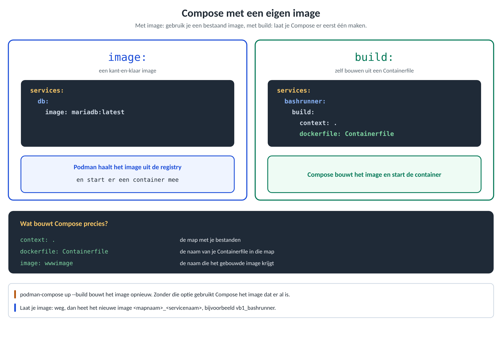
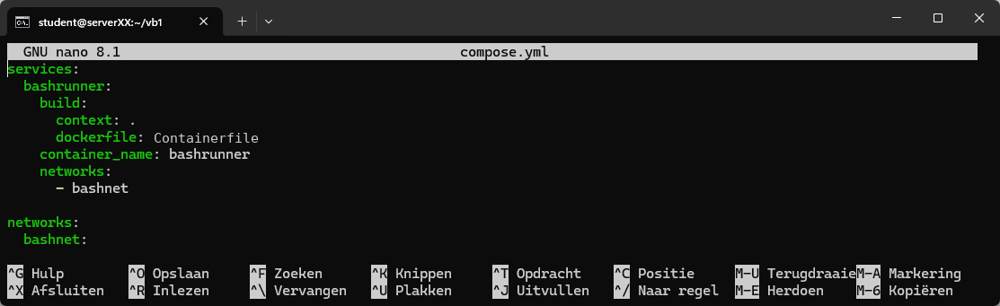
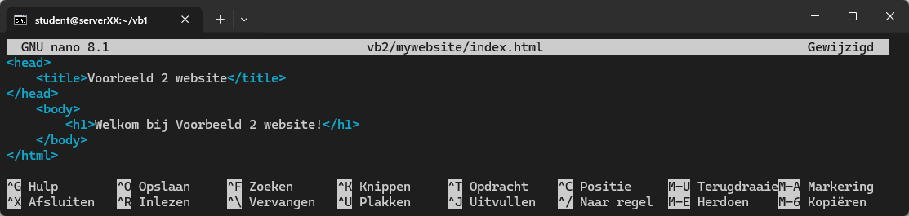
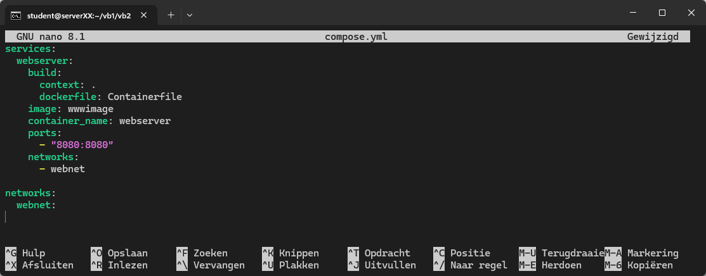
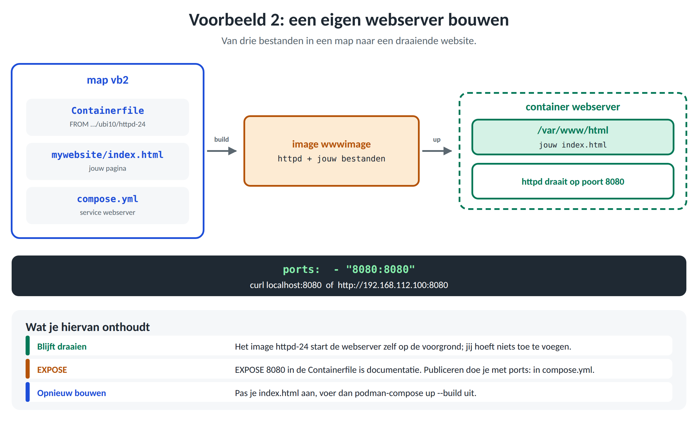
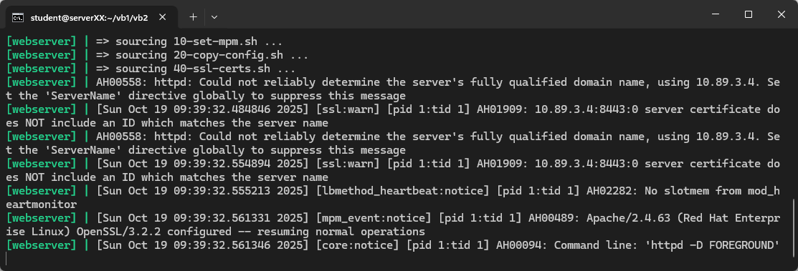

9 Podman Compose in combinatie met Containerfile¶
9.1 Doelstellingen¶
Na dit hoofdstuk beheerst de student het volgende:
-
uitleggen hoe een Containerfile en een compose-bestand samenwerken;
-
de belangrijkste instructies van een Containerfile herkennen: FROM, COPY, RUN, WORKDIR, CMD of ENTRYPOINT en HEALTHCHECK;
-
in een compose-bestand met build, context en dockerfile een image laten bouwen in plaats van een bestaand image te gebruiken;
-
met de sleutel image zelf een naam geven aan het image dat Compose bouwt;
-
voor een service een containernaam, een netwerk en een poortkoppeling instellen;
-
een eigen bash-script in een image plaatsen en het laten uitvoeren bij het starten van de container;
-
een eigen webserver bouwen op basis van registry.access.redhat.com/ubi10/httpd-24 met een eigen index.html;
-
uitleggen waarom EXPOSE niet hetzelfde is als een poort publiceren;
-
uitleggen waarom een container met httpd-24 blijft draaien zonder dat je daar zelf iets voor moet doen;
-
een compose-omgeving bouwen en starten met podman-compose up --build en het resultaat controleren met curl.
9.2 Inleiding¶
Een Containerfile en een compose-bestand vullen elkaar aan. Samen maken ze het bouwen, instellen en beheren van containers eenvoudiger.
Een Containerfile is een recept met instructies om een image te bouwen. Het bevat alle stappen die daarvoor nodig zijn, zoals eerder behandeld:
-
het basisimage (FROM);
-
het kopiëren van bestanden (COPY);
-
het installeren van software (RUN);
-
het startcommando (CMD of ENTRYPOINT);
-
een statuscontrole (HEALTHCHECK).
Met een compose-bestand beschrijf je daarna een of meer containers op basis van zulke images. In dat bestand kan je:
-
verschillende services beschrijven, zoals een database en een toepassing;
-
netwerken en volumes aanmaken;
-
poorten publiceren en omgevingsvariabelen instellen.

9.3 Voorbeeld 1¶
We bouwen een eenvoudige container die een bash-script uitvoert.
Maak eerst een map vb1 aan.
student@serverXX:~$ mkdir vb1
Daarin komen drie bestanden: het Containerfile met het recept voor het image, het script dat in de container moet draaien, en het compose-bestand.
9.3.1 Containerfile¶
We vertrekken van het image registry.access.redhat.com/ubi10/ubi en voegen er een eenvoudig bash-script aan toe.
student@serverXX:~$ nano vb1/Containerfile
FROM registry.access.redhat.com/ubi10/ubi
COPY script.sh /scripts/script.sh
RUN chmod +x /scripts/script.sh
WORKDIR /scripts
CMD ["/bin/bash", "./script.sh"]
Dit bestand doet het volgende:
-
het vertrekt van registry.access.redhat.com/ubi10/ubi als basisimage;
-
het kopieert het bash-script script.sh naar de container;
-
het geeft dat script uitvoerrechten;
-
het stelt de werkmap in op /scripts;
-
het voert het script uit zodra de container start.
9.3.2 Bash script (script.sh)¶
Hieronder zie je het script dat in de container draait. Het zet enkel een bericht op het scherm.
student@serverXX:~$ nano vb1/script.sh
#!/bin/bash
echo "Hallo, dit is een bash-script dat draait in een RHEL-container!"
9.3.3 compose.yml¶
Dit is het compose-bestand. Het bouwt zelf een image op basis van het recept hierboven, in plaats van een kant-en-klaar image op te halen.
student@serverXX:~$ nano vb1/compose.yml
services:
bashrunner:
build:
context: .
dockerfile: Containerfile
container_name: bashrunner
networks:
- bashnet
networks:
bashnet:

Dit compose-bestand doet het volgende:
-
het beschrijft een service met de naam bashrunner;
-
het bouwt het image met het recept uit de huidige map;
-
het plaatst de container in een netwerk met de naam bashnet.
9.3.4 Uitvoer¶
Voer het volgende uit in de map waar je compose-bestand staat:
student@serverXX:~$ cd vb1
student@serverXX:~/vb1$ podman-compose up --build
…
COMMIT vb1_bashrunner
…
[bashrunner] | Hallo, dit is een bash-script dat draait in een RHEL-container!
Omdat we zelf geen naam voor het image opgegeven hebben, krijgt het de naam <projectnaam>_<servicenaam>. Podman Compose leidt die projectnaam af van de map waarin het compose-bestand staat. Vandaar de naam vb1_bashrunner.
student@serverXX:~/vb1$ podman images
REPOSITORY TAG IMAGE ID CREATED SIZE
localhost/vb1_bashrunner latest 2e1c566ac4b2 25 seconds ago 220 MB
Een tweede keer starten gaat sneller: het image bestaat nu al, dus je hoeft niet opnieuw te bouwen.
student@serverXX:~/vb1$ podman-compose up
[bashrunner] | Hallo, dit is een bash-script dat draait in een RHEL-container!
9.4 Voorbeeld 2¶
Nu bouwen we zelf een eenvoudige webserver op basis van UBI 10 met Apache.
Maak een map vb2 aan met daarin:
-
het bestand Containerfile;
-
de map mywebsite met daarin het bestand index.html;
-
het bestand compose.yml.
We maken eerst de map en de submap aan.
student@serverXX:~$ mkdir -p vb2/mywebsite
9.4.1 Containerfile¶
student@serverXX:~$ nano vb2/Containerfile
FROM registry.access.redhat.com/ubi10/httpd-24
COPY mywebsite/ /var/www/html/
EXPOSE 8080
In deze Containerfile:
-
gebruiken we een httpd-webserver op basis van UBI 10;
-
plaatsen we de inhoud van de map mywebsite in /var/www/html;
-
documenteren we dat de container op poort 8080 luistert.
EXPOSE publiceert die poort niet en is ook niet verplicht. Het dient als documentatie: wie je image later gebruikt, ziet zo meteen op welke poort de toepassing luistert. Publiceren doe je met ports in je compose-bestand, of met -p bij podman run.
Je hoeft de container zelf niet draaiende te houden. Het image httpd-24 start de webserver als hoofdproces, en zolang dat proces draait, blijft ook de container draaien.
9.4.2 Index.html¶
We plaatsen dit bestand in de map mywebsite.
student@serverXX:~$ nano vb2/mywebsite/index.html
<html>
<head>
<title>Voorbeeld 2 website</title>
</head>
<body>
<h1>Welkom bij Voorbeeld 2 website!</h1>
</body>
</html>

9.4.3 Compose.yml¶
We geven het compose-bestand de volgende inhoud.
student@serverXX:~$ nano vb2/compose.yml
services:
webserver:
build:
context: .
dockerfile: Containerfile
image: wwwimage
container_name: webserver
ports:
- "8080:8080"
networks:
- webnet
networks:
webnet:

In dit compose-bestand:
-
beschrijven we een service webserver die het image bouwt met de Containerfile;
-
geven we het image dat gebouwd wordt zelf een naam: wwwimage;
-
koppelen we poort 8080 van de container aan poort 8080 van de server, zodat je de website kan bezoeken via http://localhost:8080;
-
draait de container in het netwerk webnet.

9.4.4 Uitvoer¶
Voer in de map vb2 het volgende commando uit om het image te bouwen en de container te starten:
student@serverXX:~$ cd vb2
student@serverXX:~/vb2$ podman-compose up --build
Zoals je ziet blijft de webserver draaien. Je terminalvenster blijft dus bezet.

Open daarom een tweede terminalvenster en vraag de pagina op met curl.
student@serverXX:~$ curl localhost:8080
<html>
<head>
<title>Voorbeeld 2 website</title>
</head>
<body>
<h1>Welkom bij Voorbeeld 2 website!</h1>
</body>
</html>
Je ziet dat de webpagina beschikbaar is.
9.4.5 Opruimen¶
Stop de omgeving met Ctrl+C in het eerste terminalvenster en ruim daarna alles op.
student@serverXX:~/vb2$ podman-compose down
De containers en het netwerk zijn nu weg. Het image dat je gebouwd hebt, blijft wel bestaan.
student@serverXX:~/vb2$ podman images
REPOSITORY TAG IMAGE ID CREATED SIZE
localhost/wwwimage latest b9c514e57fb4 About a minute ago 285 MB
Wil je ook dat image verwijderen, dan doe je dat met podman rmi.
student@serverXX:~/vb2$ podman rmi wwwimage
Untagged: localhost/wwwimage:latest
Deleted: b9c514e57fb4f21caff73a23d54d509f55ee359b576327cf5d45e5610ee8c6ff
Deleted: 5b4d79f1db6de1a924b855cd978604aeaecc4f8e4b9ed5bbb96af75b03cdc46d